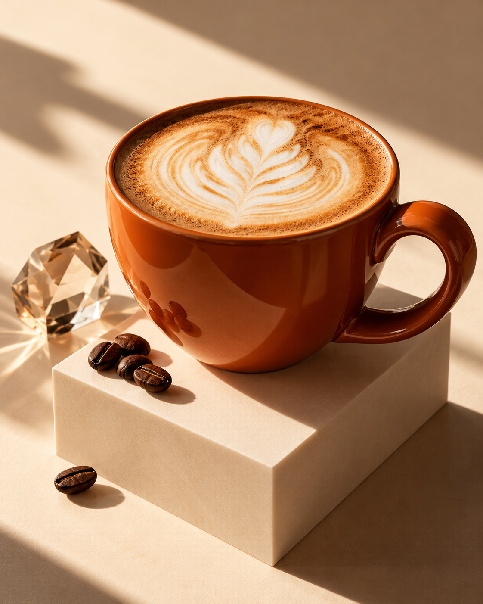

Кофе ждёт. День зовёт.
Возьмите паузу на чашку кофе.
А дальше — в своём ритме.
Москва, Зелёный проспект, 81
3 этаж · метро Новогиреево

Diamond Cup, Новогиреево
Город торопится.
Вы — не обязаны.
Между «уже бегу» и «ещё пять минут»
всегда найдётся место для кофе.
Не усложнять.
Просто зайти.
Если вы рядом с Новогиреево, загляните в Diamond Cup на Зелёном проспекте.
А что сегодня в чашках и на витрине — лучше спросить у команды. Здесь мы показываем настроение будущего сайта, а не действующее меню.
Написать в TelegramСохраните точку на карте
Зелёный, 81.
Кофе — на третьем.
Москва, Зелёный проспект, 81, 3 этаж
Новогиреево
Открыть маршрутНа связи с Diamond Cup
Пара слов
перед кофе.
Уточнить ассортимент, договориться о визите или задать вопрос команде.
+7 931 601-12-34Написать в TelegramЗелёный проспект, 81, 3 этаж
Москва · Новогиреево